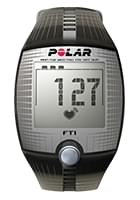

Делимся опытом Наши сотрудники всегда готовы поделиться своим опытом, так как сами бегают полумарафоны, переплыли Босфор, готовятся к соревнованиям по триатлону!
Заботимся о здоровье Мы работаем для того, чтобы Ваши занятия спортом шли на пользу Вашему здоровью и были в радость Вам и Вашим близким!
Учим бегать Помогаем с обучением правильной технике бега! Дружим с крупнейшей школой бега в России - I LOVE RUNNING.
Получите бесплатную консультацию по подбору пульсометра
Просто заполните форму заявки и мы перезвоним вам в течении 10 минут
Каталог пульсометров
Для фитнеса
для бега
для триатлона

Пульсометр Polar FT1
Для первых шагов в тренировках, основанных на сердечном ритме
Не знала, что себе купить - обратилась к ребятам из RunSmart - подобрали пульсометр, который подошёл именно под мои цели и финансовые возможности.Через некоторое время решила обновить гаджет - не раздумывая обратилась туда же.Новые цели - новый гаджет! Спасибо, RunSmart!
Иван Сёмочкин 1 полумарафон
Крутая штука-пульсометр. Обычно без них бегал. Оказывается только хуже себе делал. Купил пульсометр, ещё в подарок получил тренировку. Со мной вместе провели первую тренировку, научили пользоваться новым гаджетом. Также объяснили основы анатомии, составили план тренировок на месяц вперёд.С ними подготовился к своему первому полумарафону! Спасибо!!!
Юлия Дашкина 2 полумарафона
Долго не могла начать бегать, т.к. до этого несколько раз начинала, но становилось тяжело и я бросала. От друзей услышала о RunSmart и о беге с контролем пульса и решила попробовать.Позвонила, ребята поинтересовались моими целями и подобрали очень интересный вариант со скидкой! Теперь бегаю и наслаждаюсь бегом! Пробежала уже 2 полумарафона и несколько более коротких забегов и не намерена останавливаться!Спасибо!!!